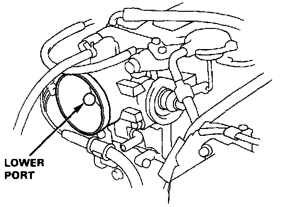
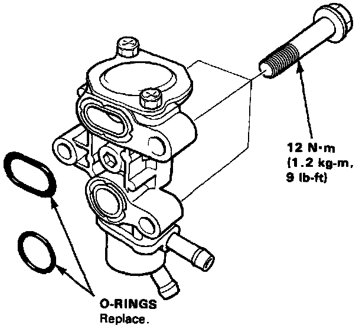

Auxiliary Air Valve (Idle Speed): Testing and Inspection

Fast Idle Valve Inspection
NOTE: The fast idle valve is factory adjusted: it should not be disassembled.
1. Remove the intake air duct from the throttle body.
2. Start the engine.
3. Put your finger over the lower port in throttle body and make sure that there is air flow with the engine cold (coolant temperature below 30°C, 86°F).

- If not, replace the fast idle valve and retest.
4. Warm up the engine (cooling fan comes on).
5. Check that the valve is completely closed. If not, air suction can be felt at the lower port in the throttle body.
- If any suction is felt, the valve is leaking. Check coolant level and for air in the coolant system. If OK, replace the fast idle valve and recheck.